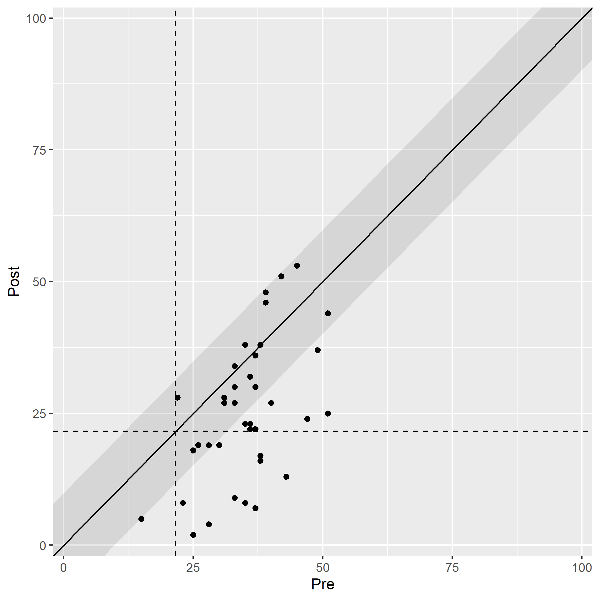

The goal of this package is to provide all necessary tools for analyses of clinical significance in clinical intervention studies. In contrast to statistical significance, which assesses if it is probable that there is a treatment effect, clinical significance can be used to determine if a treatment effect is of practical use or meaningful for patients.
Installation
You can install clinicalsignificance from CRAN and the development version from GitHub:
install.packages("clinicalsignificance")
# Or you install the development version from GitHub:
# install.packages("devtools")
devtools::install_github("pedscience/clinicalsignificance")Example
Given a tidy dataset, the employed instrument’s reliability and descriptives (M and SD) of the functional population, the clinical significance in a study can be easily assessed.
library(clinicalsignificance)
results <- claus_2020 |>
clinical_significance(
id = id,
time = time,
outcome = bdi,
pre = 1,
post = 4,
reliability = 0.81,
m_functional = 8,
sd_functional = 8,
type = "c"
)
results
#> Clinical Significance Results (JT)
#>
#> Category | n | Percent
#> ---------------------------
#> Recovered | 10 | 0.250
#> Improved | 9 | 0.225
#> Unchanged | 21 | 0.525
#> Deteriorated | 0 | 0.000
#> Harmed | 0 | 0.000You can receive a detailed summary of the analysis by
summary(results)
#>
#> Clinical Significance Results
#>
#> There were 43 participants in the whole dataset of which 40 (93%)
#> could be included in the analysis.
#>
#> The JT method for calculating cutoffs and reliable change was chosen
#> and the outcome variable was "bdi".
#>
#> The cutoff type was "c" with a value of 21.6 based on the following
#> population characteristics (with lower values representing a
#> beneficial outcome):
#>
#> Population Characteristics
#>
#> M Clinical | SD Clinical | M Functional | SD Functional
#> -------------------------------------------------------
#> 35.48 | 8.16 | 8 | 8
#>
#>
#> The instrument's reliability was set to 0.81
#>
#> Individual Level Results
#>
#> Category | n | Percent
#> ---------------------------
#> Recovered | 10 | 0.250
#> Improved | 9 | 0.225
#> Unchanged | 21 | 0.525
#> Deteriorated | 0 | 0.000
#> Harmed | 0 | 0.000or plot the results with
plot(results)
Rationale
Jacobson et al. (1984) criticized, along with other researchers, that the vast majority of research in psychological intervention research is based on statistical significance testing. This procedure comes with two major disadvantages: first, treatment effects are based on groups and lack information on individual participants. Second, a significance test lacks practical relevance. One can think of a hypothetical intervention that expands life expectancy by 1 day. With enough participants incorporated in a significance test, one can virtually guarantee a significant result although most would agree that such an intervention lacks practical relevance.
Therefore, Jacobson et al. (1984) postulated an additional procedure that categorizes each patient based on his/her individual change. If a patient (reliably) moves from the dysfunctional to a functional population, this patient’s change is clinically significant. This case is depicted in the figure below.
Let’s suppose an instrument assessing depressive symptoms. A clinical population of patients with a major depression may score on average with M = 34 and an SD = 8 on this instrument. A functional population (in this case a sample of people without a major depression) may score on average with M = 8 and an SD = 8 on that same instrument. If now an individual patient with major depression scores 32 on the depression instrument before and intervention (black point in the clinical population) and 12 after an intervention (black point in the functional population) and therefore has crossed the cutoff between the two populations (the black line in between), then this patient has changed clinically significant (if that change is beyond the error of measurement of the instrument).